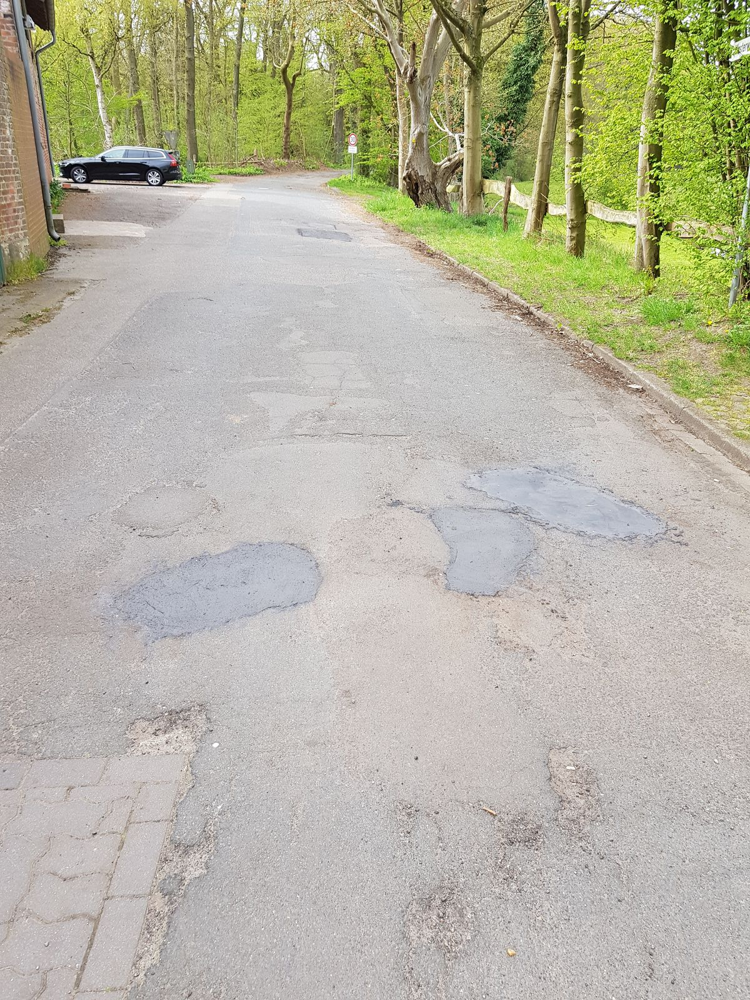
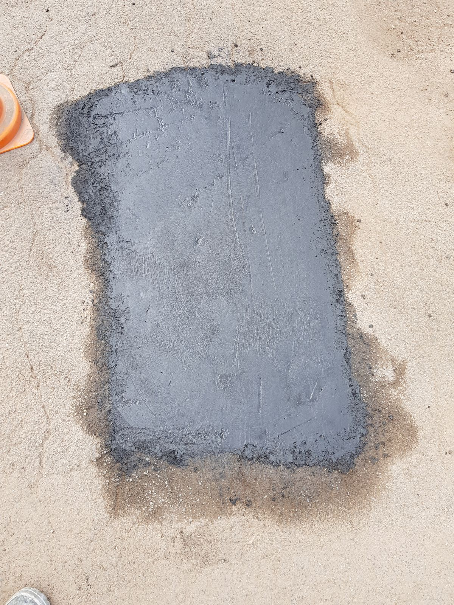
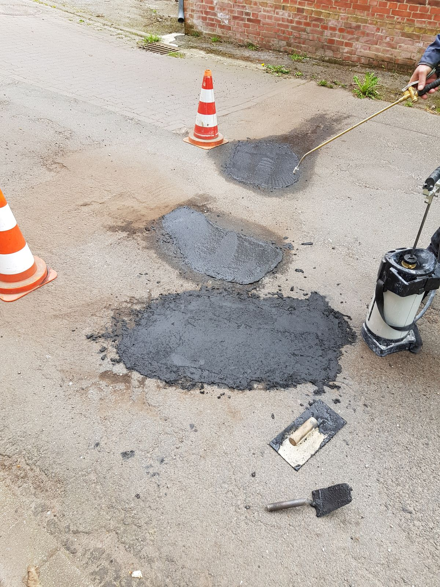
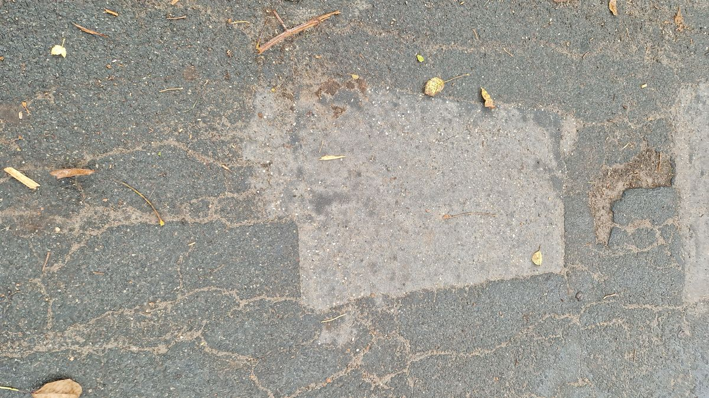
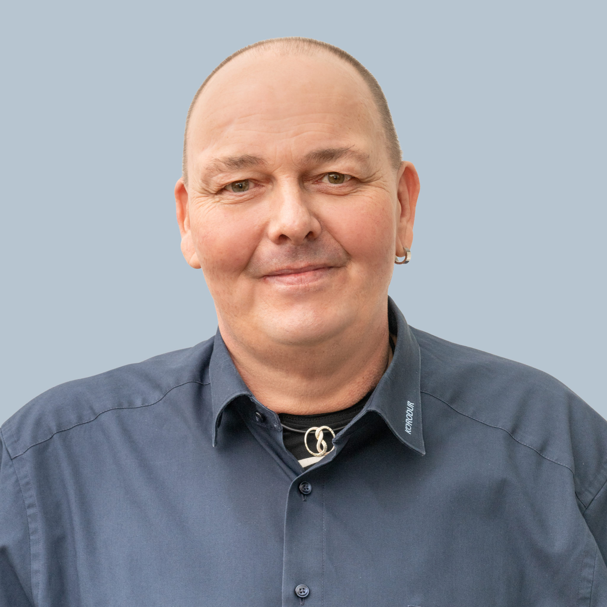

Einmal reparieren.
Dauerhaft halten.
Rapid Set ASPHALT REPAIR MIX – die schnelle, einfache und dauerhafte Alternative zu Kaltmischgut. Erhältlich über den Baustoffhandel.
Warum Kaltmischgut nicht reicht
Frostschäden, Schlaglöcher, absackende Schachtabdeckungen – das Schadensbild kennt jeder. Die übliche Lösung? Kaltmischgut rein und hoffen. Doch es gibt eine dritte Option.
Schnell drin – schnell wieder draußen
Kaltasphalt ist die beliebteste Notlösung. Nach wenigen Wochen reißt die Stelle wieder auf. Mehrfach im Jahr dieselbe Reparatur – das ist Geldverbrennung.
Hält, aber wann?
Heißasphalt ist dauerhaft – wenn man ihn bekommt. Fräse, Einbaubohle, Walze, Mindestmenge. Für einzelne Schlaglöcher völlig unwirtschaftlich.
Schnell, einfach – und es hält
Sack auf, Wasser dazu, mischen, einbauen. Nach 30 Minuten belastbar. Hält unter LKW-Verkehr – in über 100 Referenzprojekten nachgewiesen.
Sack auf. Wasser dazu. Fertig.
Rapid Set ASPHALT REPAIR MIX verbindet die Geschwindigkeit von Kaltmischgut mit der Dauerhaftigkeit von Heißasphalt.
Vorbereiten
Belag entfernen, Kanten anschneiden, vornässen
Anmischen
25 kg + 3,8 l Wasser, Rührquirl
Einbauen
Einfüllen, abziehen, verdichten
Belastbar
30 Min. belastbar, 1 Std. voll


ARM vs. Kaltmischgut vs. Heißasphalt
| Kriterium | ARM | Kaltmischgut | Heißasphalt |
|---|---|---|---|
| Belastbar nach | 30 Min. | Sofort (instabil) | 30–60 Min. |
| Voll belastbar | ca. 1 Std. | Sofort (eingeschr.) | 1–2 Std. |
| Haltbarkeit | Dauerhaft | Wochen–Monate | Dauerhaft |
| Spezialgeräte | Nein | Nein | Ja |
| Haftbrücke | Nein | Teilweise | Nein |
| Lieferform | Sackweise | Sackweise | Tonnenweise |
| Einbaustärke | 30–600 mm | 20–50 mm | 30–100+ mm |
| Frostbeständig | Ja | Eingeschränkt | Ja |
| CO₂ | 30 % weniger | k. A. | Hoch |
| Gesamtkosten | Mittel | Hoch (Wdh.) | Hoch (Einmal) |
Bewährt in der Praxis
„Ein Material, das hält, was es verspricht – und das die Arbeit vor Ort so einfach wie möglich macht.“ – F & G Bau GmbH, Versmold

Lagerfläche Dieckmann, Versmold
Erste Referenz: Lagerfläche unter höchster Belastung durch LKW und Bagger. Hervorragende Beständigkeit.

Linnenbecker, Bad Oeynhausen
Testfläche unter ständigem LKW- und Staplerverkehr. Hervorragende Beständigkeit.

Wüseke Baustoffwerke, Sassenberg
LKW-Ausfahrt mit 2 Paletten saniert. Volle Tragfähigkeit unter täglichem Schwerlast.

Lackiererei Schmidt, Versmold
Betriebszufahrt saniert. Überzeugende Tragfähigkeit und einfachste Verarbeitung.
Für jede Fläche. Für jeden Einsatz.
Ob Straße, Gehweg, Parkplatz oder Industriegelände – Asphalt Repair Mix repariert dauerhaft.
Kommunen – Weniger Doppelarbeit
- Dauerhafte Reparatur von Schlaglöchern und Frostschäden
- Budget sinnvoll einsetzen – jede Stelle nur einmal reparieren
- Keine Fräse, keine Walze – ein Bautrupp reicht
- Verarbeitbar ab 5 °C – ideal für die Frostschäden-Saison
GaLa-Bau – Keine Reklamationen
- Ergebnisse, auf die Sie Ihren Namen setzen können
- Schnelle Wiederfreigabe – Baustelle in Stunden räumen
- Einfachste Verarbeitung ohne Spezialgeräte
- Wettbewerbsvorteil gegenüber Kaltmischgut
Facility Management – Sichere Flächen
- Schlaglöcher beseitigen – bevor sie zum Haftungsfall werden
- Sanierung bei laufendem Betrieb
- Professionelles Erscheinungsbild
- Flexible Einbaustärke 30–600 mm
Verarbeiter – Einfach verarbeiten
- Sack auf, 3,8 l Wasser, mischen, einbauen – fertig
- Kein Primer, keine Haftbrücke, keine Fräse
- 30–600 mm Einbaustärke
- Pumpfähig für größere Flächen
Die Fakten auf einen Blick
| Kennwert | Wert |
|---|---|
| Druckfestigkeit | ca. 38 N/mm² |
| Biegezugfestigkeit | ca. 6,4 N/mm² |
| E-Modul | ca. 22.000 N/mm² |
| Körnung | 0–8 mm |
| Farbe | Schwarz |
| Einbaustärke | 30–600 mm |
| Lieferform | 25-kg-Sack |
| Wasserzugabe | ca. 3,80 l / 25 kg |
| Materialverbrauch | ca. 20 kg/m²/cm |
| Verarbeitungstemperatur | 5–30 °C |
| Belastbar nach | ca. 30 Min. |
| Voll belastbar | ca. 1 Std. |

Häufige Fragen
Ihr Fachberater in Ihrer Region
Produktfragen, Mengenberechnung, Verarbeitungsempfehlungen – kostenlos und unverbindlich.
